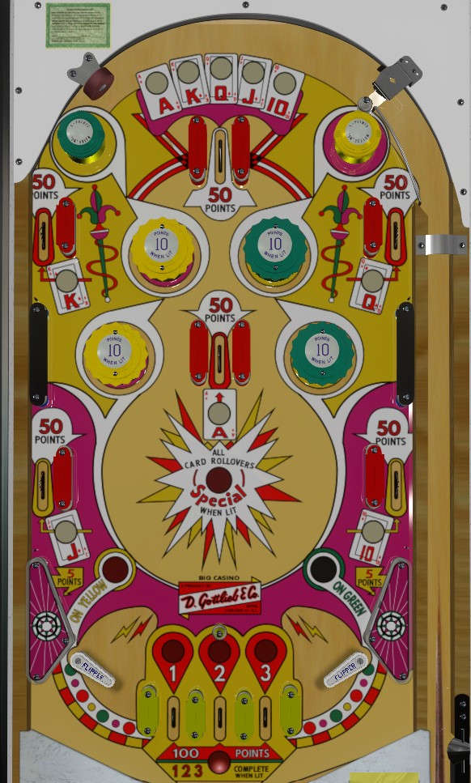

If playing for score: on the plunge, try to light pop bumpers using the passive bumpers at the top of the game, and use the lit 10-point bumpers as the most convenient repeatble source of points.
If playing for replays: collecting playing cards from the rollover lanes around the table. 1 replay for completing the set, and 1 more for collecting any card after completing the set.
In either case: try to always drain down the center out lanes; you get 200 bonus points for draining down all three, plus a special for draining down any of them after completing the set.
The below screenshot of Big Casino's playfield was taken from the VPX recreation by Loserman76.
All pop bumpers score 1 point, or 10 when lit. The two left pop bumpers are yellow, and the two right pop bumpers are green. The upper left passive bumper or the wall switch next to the right flipper will light the green bumpers. The upper right passive bumper or the wall switch next to the left flipper light the yellow bumpers. Only one colour of bumper will be lit at a time, alternating on 1-point switch hits, even if both have been qualified. Lit bumpers/qualified colours will turn off at the end of the ball.
The center top lane available on the plunge can award any of the five cards in A-K-Q-J-10, and rotates based on 1 point switch hits. There are 5 other lanes that always give 1 card each: K and Q in the upper corners, A in the center, and J and 10 on the lower sides. Going through any rollover lane that awards a card scores 50 points. Collecting all 5 cards over the course of the game awards a Special, and collecting any card after completing the A-K-Q-J-10 set awards an additional Special. Completing the A-K-Q-J-10 set also awards a letter in Big Casino on the backbox; completing Big Casino scores an additional 1, 2, or 3 replays depending on game settings.
The flippers are very far apart, and there are 3 out lanes in the center of the table labelled 1, 2, and 3. The ball can also drain between a flipper and one of the out lanes. The center out lanes always score 100 points. Roll through a lit lane to unlight it. Unlighting all of 1-2-3 scores a one-time 200 point bonus. Making any center out lane after collecting 1-2-3 awards a Special. Completing 1-2-3 also makes it so that 2 different numbers are lit for Match at the end of the game, giving a 20% chance of a free game instead of 10%.
All drains score 5 points. There is no other end of ball bonus. There are no extra balls. Tilt ends game. Specials cannot be set to award points.